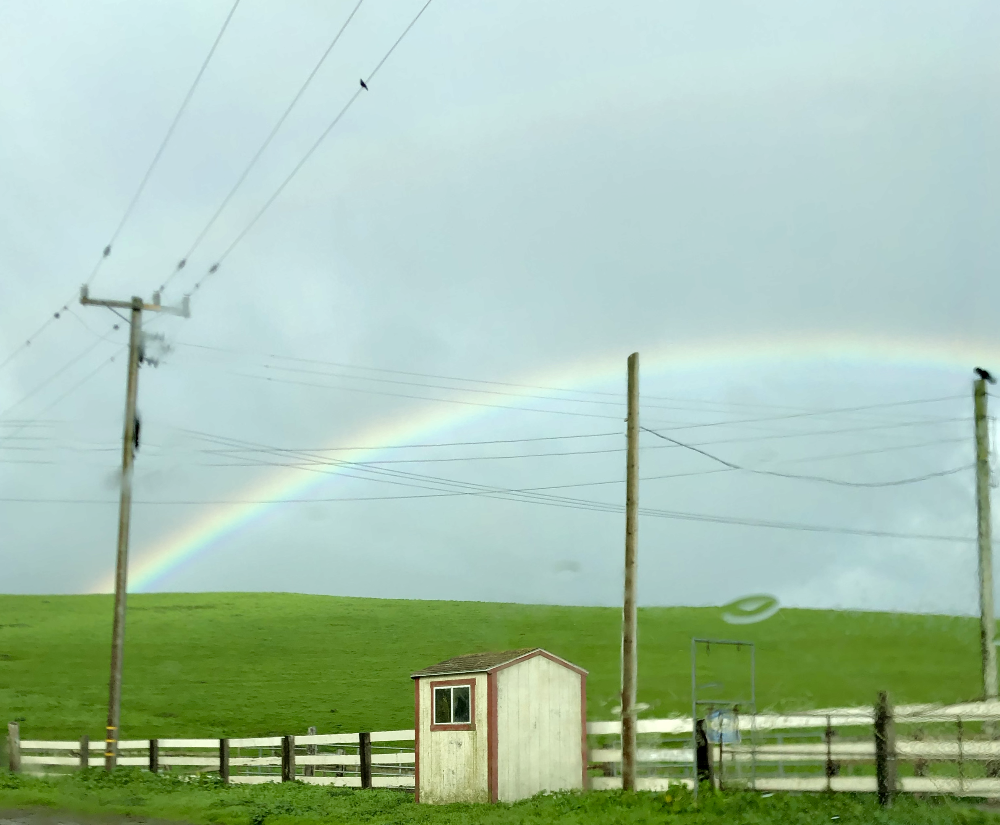

Point Reyes
Point Reyes, California—


On a Feburary weekend, I visited Point Reyes north of San Francisco.
Chimney Rock Trail
Cypress Tree Tunnel
It was raining lightly that day. I saw five or six rainbows on my way back. It was rainbow Sunday!
